📑 دليل وقاموس الباب العاشر: اللوحات الإضافية الملحقة بالإشارات
Capitolo 10 — Pannelli Integrativi dei Segnali Stradali. المرجع الهندسي والامتحاني المعتمد لفهم مخصصات اللوحات الإضافية، التمييز الفارق بين المسافة والامتداد، فترات الأعياد وأيام العمل، فئات المركبات والاستثناءات، وفك جميع فخاخ بنك الأسئلة الوزاري (263 سؤالاً).
⚖️ أولاً: المقارنة الذهبية الكبرى — المسافة (Distanza) مقابل الامتداد (Estensione)
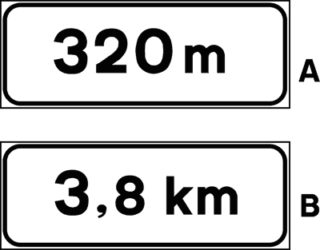
- 📍 الشكل التايبوجرافي: رقم مجرد متبوع بوحدة القياس مثل
[300 m]أو[3,8 km]بدون أي أسهم على الإطلاق. - 🎯 المعنى القانوني الدقيق: تحدد المسافة الفاصلة بين موضع الإشارة وبين النقطة التي يبدأ عندها الخطر أو الإلزام أو المنع.
- 🛑 مع إشارات المنع والإلزام: تعني أن سريان المنع أو الأمر سيبدأ بعد قطع هذه المسافة المحددة.
- 💡 مع إشارات الإرشاد (Indicazione): تحدد المسافة المتبقية للوصول إلى المكان أو الخدمة الموضحة.
- ❌ فخاخ وزارية شائعة (FALSO): "تشير إلى طول المسافة المقطوعة بالفعل (strada già fatta)" • "تشير لطول منطقة الخطر" • "تشير لانحدار الطريق".
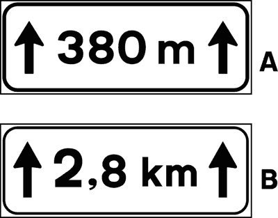
- 📏 الشكل التايبوجرافي: رقم يحيط به سهمان رأسيان متجهان لأعلى مثل
[↑ 300 m ↑]أو[↑ 2,8 km ↑]. - 🔄 المعنى القانوني الدقيق: تحدد طول وامتداد قطاع الطريق الذي يستمر فيه الخطر أو يسري فيه المنع بدءاً من موقع الإشارة.
- ⚠️ مع إشارات الخطر: تعني أن الخطر يبدأ بعد 150 متراً المعتادة ويستمر بطول المسافة المكتوبة بين السهمين.
- 🚫 مع إشارات المنع: تعني استمرار تطبيق المنع على طول هذه المسافة المحددة.
- ❌ فخاخ وزارية شائعة (FALSO): "الخطر يبدأ بعد 300 متر" (هذا معنى المسافة بدون أسهم!) • "تشير لعرض نهر الطريق" • "تشير لمسافة الأمان بين السيارات".
⏰ ثانياً: الفترات الزمنية والأيام (Fasce Orarie e Giorni)
تُحدد هذه اللوحات الساعات والأيام التي تكون فيها الإشارة سارية المفعول، وتعتمد الاختبارات على التمييز الصارم بين الرموز الدينية وأيام العمل.
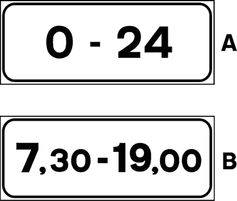
- 🕒 المعنى: الإشارة تسري فقط خلال الساعات المحددة (مثلاً من 08:00 إلى 20:00).
- 📅 نطاق السريان: تطبق في جميع أيام الأسبوع (أيام العمل وأيام العطل معاً) طالما لم يوجد رمز مخصص.
- 🌙 خارج هذه الساعات: تصبح الإشارة غير سارية ويُسمح بما كان ممنوعاً (مثل ركن السيارة).
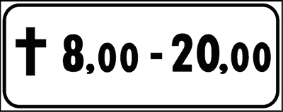
- ✝️ الرمز الدال: علامة الصليب اللاتيني
(✝️). - 🎉 المعنى القانوني: الإشارة سارية حصراً في أيام العطلات الرسمية والأعياد وأيام الأحد (Domeniche e festivi).
- 💼 أيام العمل (من الاثنين إلى السبت): الإشارة غير سارية إطلاقاً في أيام العمل العادية.
- ❌ فخ وزاري خادع: "يشير لوجود كنيسة أو مستشفى" ❌ FALSO! • "يسري في أيام العمل" ❌ FALSO!
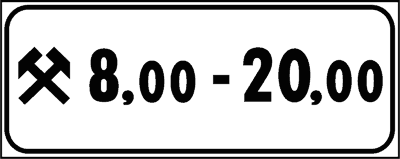
- ⚒️ الرمز الدال: علامة المطرقتين المتقاطعتين
(⚒️). - 🏢 المعنى القانوني: الإشارة تسري فقط في أيام العمل من الاثنين إلى السبت (Dal lunedì al sabato nei giorni non festivi).
- 🏖️ أيام الأحد والعطلات: تصبح الإشارة معطلة تماماً وغير ملزمة في أيام الأحد والأعياد.
- ❌ فخ وزاري خادع: "يشير لمنجم أو مصنع أو ورشة حدادة" ❌ FALSO! • "يسري طوال أيام الأسبوع" ❌ FALSO!
🚚 ثالثاً: فئات المركبات والاستثناءات — الرمز المجرد مقابل "Eccetto"
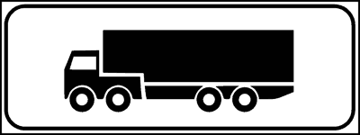
- 🚛 التركيب: رسم ظلي للمركبة (مثل شاحنة نقل بضائع) بدون أي كتابة مرافقة أسفل إشارة المنع.
- 🎯 المعنى: المنع أو الإلزام يخص حصراً تلك الفئة المصورة، ولا علاقة للسيارات الخاصة أو الدراجات به.
- ✅ مثال: إشارة منع الدخول ⛔ مع رسم شاحنة 🚚 تعني: ممنوع دخول الشاحنات فقط، ويجوز للسيارات الملاكي العبور.
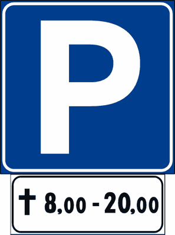
- 🚫 التركيب: كلمة "ECCETTO" مصحوبة برمز الحافلة أو مركبة الشرطة أو ذوي الاحتياجات الخاصة.
- 🔄 المعنى العاكس: الإشارة تسري وتلزم كافة المركبات الأخرى بلا استثناء، وتُعفى منها فقط الفئة المستثناة.
- 🚌 مثال: منع المرور مع
[eccetto autobus]يعني: ممنوع مرور كل المركبات، ويُسمح فقط لحافلات النقل العام. - ❌ فخ وزاري: يقول "الإشارة تعني منع مرور الحافلات" ❌ FALSO! بل الحافلة هي الفئة الوحيدة المسموح لها!
↕️ رابعاً: لوحات بداية واستمرار ونهاية سريان المنع (Inizio, Continuazione, Fine)
توضع هذه اللوحات بكثرة تحت إشارات منع الوقوف (Divieto di sosta) والتوقف لتوضيح الحدود الجغرافية الدقيقة لمنطقة الحظر.
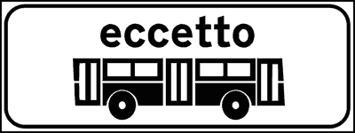
- ⬆️ الرمز: سهم وحيد متجه لأعلى
[↑]أو كلمة[INIZIO]بخلفية خضراء. - 🚩 المعنى: تشير إلى نقطة البداية الدقيقة لسريان المنع أو الإلزام على قطاع الطريق التالي للوحة.
- 🅿️ قاعدة الركن: قبل موضع اللوحة يُسمح بالوقوف، ومن بعد اللوحة يبدأ سريان المنع الصارم.
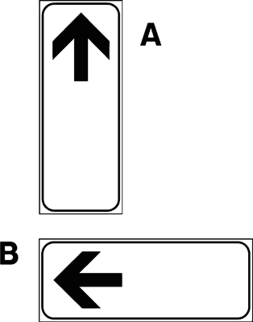
- ↕️ الرمز: سهم ذو رأسين متعاكسين لأعلى ولأسفل
[↕]أو كلمة[CONTINUA]. - 🔄 المعنى: تشير إلى استمرار سريان المنع في المنطقة الواقعة قبل اللوحة وكذلك بعدها.
- 🚫 قاعدة الركن: الوقوف ممنوع منعاً باتاً على جانبي اللوحة (قبلها وبعدها).
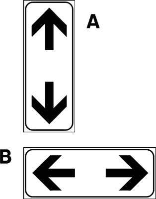
- ⬇️ الرمز: سهم وحيد متجه لأسفل
[↓]أو كلمة[FINE]بخلفية حمراء. - 🏁 المعنى: تشير إلى نهاية منطقة المنع، ومن بعد موضع هذه الإشارة ينتهي الحظر تماماً.
- ✅ قاعدة الركن: الوقوف كان ممنوعاً قبل اللوحة، وأصبح مسموحاً بمجرد تجاوز موضع اللوحة.
❄️ خامساً: لوحات الظروف الجوية وكاسحة الثلوج ومنطقة السحب الإجباري
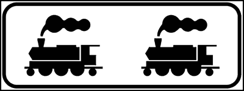
- 🚜 المعنى: تنبه لوجود آلات وجرافات إزالة الثلوج ونثر الملح تعمل على مسار الطريق.
- 📏 الرقم الإلزامي الحاسم: يجب ترك مسافة أمان لا تقل عن 20 متراً على الأقل (almeno 20 m) خلف الكاسحة.
- 🚫 حظر التجاوز: يُمنع تماماً تجاوز كاسحة الثلوج إذا كانت تسد أو تشغل مساحة نهر الطريق.
- ❌ فخ وزاري: "يجب ترك مسافة 10 أمتار" ❌ FALSO (القانون يلزم بـ 20 متراً)!
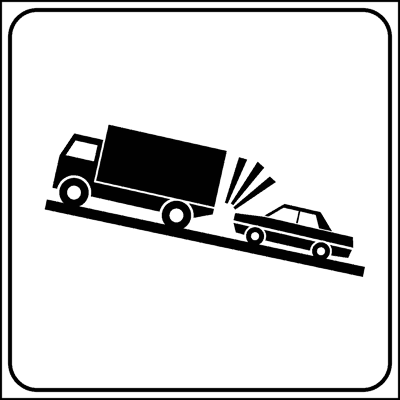
- 🏗️ المعنى: توضع أسفل إشارة منع الوقوف (Divieto di sosta) لتفيد بتطبيق عقوبة السحب الإجباري بالرافعة.
- 🚛 إجراء الحجز: يتم قطر السيارة ونقلها إلى مستودع الحجز البلدي (Depositeria comunale).
- 💶 التبعات المالية: لا يتم استرداد المركبة إلا بعد سداد تكاليف الونش ورسوم الحجز اليومية بالإضافة للغرامة.
- ❌ فخ وزاري: "يشير لورشة صيانة أعطال الطرق" ❌ FALSO!
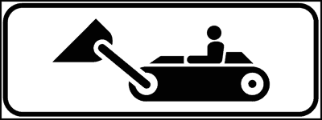
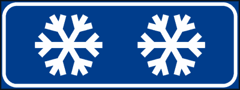
- ❄️ بلورة الجليد (Fig. 137): تنبه لخطر تشكل الجليد على الأسفلت في حالات الصقيع أو الجسور والمناطق المظللة.
- 🌧️ السحابة الممطرة (Fig. 138): تنبه لاحتمال فقدان الالتصاق وخطر الانزلاق المائي (Aquaplaning) عند هطول الأمطار.
- 🚗 الإجراء الواجب: تخفيف السرعة وزيادة مسافة الأمان وتجنب الفرملة المفاجئة.
🛤️ سادساً: مسار الطريق الرئيسي ذي الأسبقية ولوحات مسافة مزلقان القطار
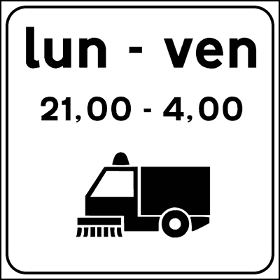
- 📐 قراءة المخطط: الخط الأسود العريض والسميك يمثل الطريق الرئيسي المحتفظ بحق الأسبقية.
- 〰️ الخطوط الرفيعة: تمثل شوارع جانبية وثانوية ملزمة قانوناً بإعطاء الأسبقية لحركة المرور على الخط العريض.
- 🔄 الانعطاف مع المسار: السائق الذي يتبع الخط العريض يظل متمتعاً بالأسبقية على القادمين من الفروع الرفيعة.
- ❌ فخ وزاري: "يشير لمنعطف خطير نحو اليسار" ❌ FALSO (هذه لوحة إضافية توضح مسار الأسبقية وليست إشارة خطر للمنعطفات)!

- 🔴 اللوحة الأولى (3 شرط حمراء مائلة): توضع أسفل إشارة الخطر على بعد 150 متراً من القضبان.
- 🔴 اللوحة الثانية (شرطتان حمراوان): توضع عند ثلثي المسافة على بعد 100 متر.
- 🔴 اللوحة الثالثة (شرطة حمراء واحدة): توضع على بعد 50 متراً فقط من تقاطع القطار.
- 📍 قاعدة هامة: تستخدم مع المزلقانات ذات الحواجز (Con barriere) وبدون حواجز (Senza barriere) على حد سواء.
📖 سابعاً: القاموس التقني المبوب للباب العاشر (Glossario A2-B1)
| المصطلح الإيطالي (Termine) | النطق الصوتي والترجمة العربية | السياق والوظيفة في الامتحان الوزاري |
|---|---|---|
Pannello di distanza |
بانيلّو دي ديستانتسا — لوحة المسافة | رقم مجرد يحدد المسافة الفاصلة حتى بداية الخطر أو المنع. |
Pannello di estensione |
بانيلّو دي إيستينسيوني — لوحة الامتداد | رقم محاط بسهمين لأعلى يحدد طول واستمرار قطاع الخطر. |
Giorni festivi |
جورني فيستيفي — أيام العطل والأعياد | يرمز لها بالصليب وتشمل أيام الأحد والأعياد المعطلة رسمياً. |
Giorni feriali |
جورني فيريالي — أيام العمل | يرمز لها بالمطرقتين وتشمل أيام العمل من الاثنين إلى السبت. |
Fascia oraria |
فاشا أوراريا — الفترة الزمنية | تحديد ساعات محددة من اليوم تسري خلالها تعليمات الإشارة. |
Eccetto / Ad eccezione di |
إيتشيتّو — ما عدا / باستثناء | تفيد استثناء الفئة المذكورة من حظر الإشارة وسريانه على البقية. |
Sgombraneve in azione |
زغومبرانيفي إن أتسيوني — كاسحة ثلوج | توجب ترك مسافة أمان لا تقل عن 20 متراً ومنع التجاوز. |
Rimozione coatta |
ريموتسيوني كواتّا — سحب إجباري بالونش | عقوبة قطر السيارة للحجز عند الوقوف المخالف على نفقة المالك. |
Andamento della strada |
أندامينتو ديلا سترادا — مسار الطريق | توضيح اتجاه الخط ذي الأسبقية عبر الخطوط العريضة. |
Pannelli distanziometrici |
ديستانتسيوميتريتشي — لوحات المسافة | لوحات الخطوط الحمراء الثلاثة (150م - 100م - 50م) لمزلقان القطار. |
⚡ ثامناً: بنك الفخاخ الوزارية التفاعلي (10 أسئلة حاسمة من الامتحانات الرسمية)
اختبر معلوماتك في فخاخ اللوحات الإضافية. انقر على الإجابة لتتحقق فوراً مع التعليل الوزاري المعتمد.